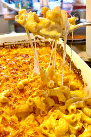

Baked Macaroni

DESCRIPTION
This southern mac and cheese recipe
will
be
the best you'll ever make in your life.
the
ultimate comfort food bursting with
5
types
of cheese, heavy cream for extra creaminess,
Once you make the best southern mac and
cheese from scratch, you'll
never
go back to
the boxed stuff.
INGREDIENTS
- Sharp Cheddar Cheese or
Extra-Sharp Cheddar Cheese
- Colby Jack
- Mozzarella
- American cheese
- Cream Cheese
- Garlic Powder
- Onion powder
- Smoked paprika
- Unsalted butter
- Chicken broth
- Eggs
- Elbow Pasta
- Heavy Cream
- Half and Half
STEPS
- First thing, cook macaroni pasta in a
large pot of the chicken broth until
just under al dente so it finishes
cooking in the oven. Then rub down an
8 by 11 or 9 by 13-inch baking dish
with the butter. Give it a good,
generous layer of butter.
- Shred your cheeses and then add your
spices to the cheeses: A little
mustard powder boosts the cheddar
cheese flavor, salt and black pepper
are a must, garlic and onion powder,
and smoked paprika for that little
extra somethin'.
- In a large bowl, mix in all of the
different cheeses, the half-and-half
and heavy cream. Mix in the cooked
macaroni pasta into the shredded
cheese, then give it a taste for
seasoning. Add a little salt if
needed, or black pepper or garlic,
whatever you want to boost up in
flavor. 2 and 3 are
interchangeable, we just want to make
sure to always taste for seasoning
before moving on to adding the
eggs!
- Then stir the eggs into the
macaroni mixture. Get it nice
and well-mixed before adding it to
the buttered baking dish and
spreading it evenly in there.
- Cover our mac in the remaining
cheese on top, sprinkle with
some smoked paprika, then bake
for 35-40 minutes. No,
there are no bread crumbs here,
we have a cheese crust instead. If
you want breadcrumbs, don't add the
cheese on top and use your favorite
breadcrumbs instead.
- Pull the mac and cheese from the
oven, let rest for five minutes
because a molten cheese burn is
not fun, then serve while still
gooey and delicious!